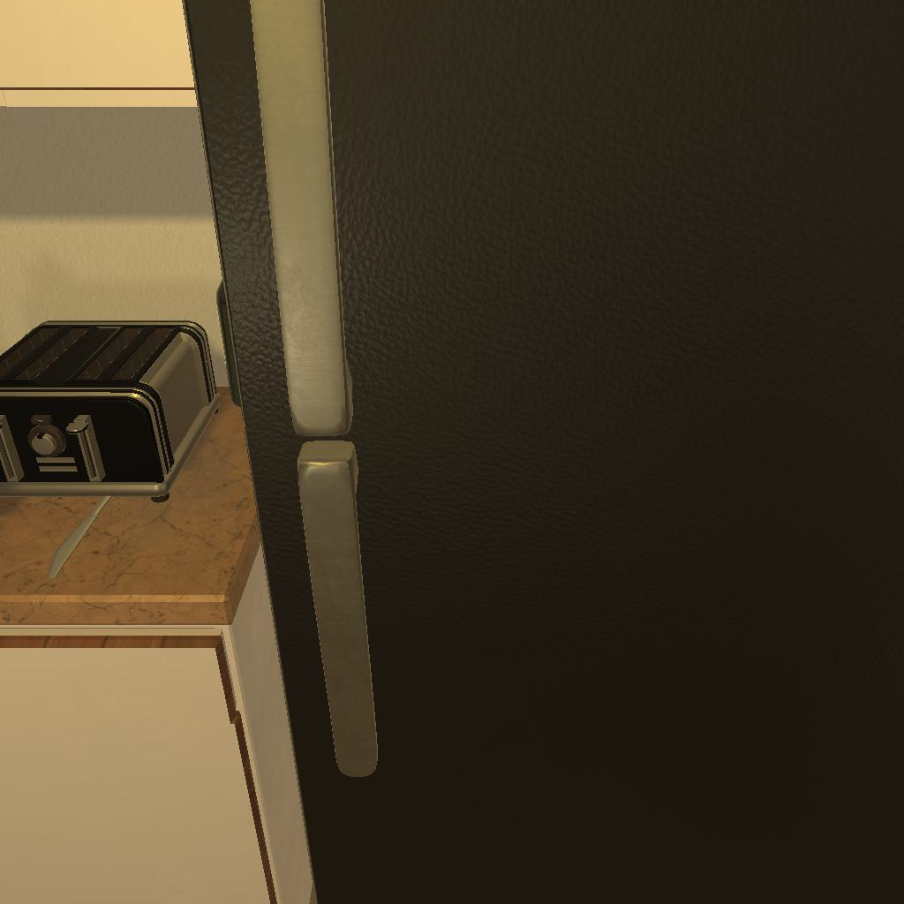

---------------------------------------------------------task: 14---------------------------------------------------------
--------------------------------------------------------------------------------------------------------------------------------------------------------------------
--------------------------------------------------------------------------------------------------------------------------------------------------------------------
Step:--------------------------------------------------------------------------9-------------------------------------------------------------------------------
----------------------------------------
VLM Prompt:
Image1:
**Instruction**
1. Analyze the provided image to identify all visible household objects, focusing on those relevant to the task description "cool some apple and put it in countertop."
2. Use the analysis of the image and the task hint "The agent must find an object of the desired type, pick it up, go to a fridge, cool the object with the fridge, then find the correct location to place it, and put it down there. The agent does not need to use the fridge button or open the fridge to cool the object, and the agent just needs to do action that is "cool the object with the fridge"." to answer the question: what is the most reasonable action in the choices for the task description "cool some apple and put it in countertop"?
4. Decide and write the answer using the template: The answer is: (i): , where i is the real number. If there is no desired object in the image, search every place based on **Initial Observation** to find the object. And if no one is exactly correct, choose a similar answer.
**Initial Observation**
You are in the middle of a room. Looking quickly around you, you can see microwave (1), countertop (1-2), cabinet (1-11), diningtable (1), drawer (1-3), sink (1), sinkbasin (1), toaster (1), stoveburner (1-4), fridge (1), coffeemachine (1), garbagecan (1)
**Answer Choices**
(1): go to microwave 1
(2): go to countertop 1
(3): go to diningtable 1
(4): go to drawer 1
(5): go to sink 1
(6): go to cabinet 2
(7): go to cabinet 3
(8): go to sinkbasin 1
(9): go to cabinet 4
(10): go to cabinet 5
(11): go to drawer 2
(12): go to toaster 1
(13): go to cabinet 6
(14): go to stoveburner 1
(15): go to cabinet 7
(16): go to stoveburner 2
(17): go to stoveburner 3
(18): go to stoveburner 4
(19): go to drawer 3
(20): go to cabinet 8
(21): go to cabinet 9
(22): go to cabinet 10
(23): go to coffeemachine 1
(24): go to cabinet 11
(25): go to garbagecan 1
(26): open fridge 1
(27): close fridge 1
(28): examine fridge 1
**Answer**
Let's think step by step by following the instructions.
----------------------------------------
----------------------------------------
Original Response:
The task is to cool some apple and put it on the countertop. Since the agent does not need to use the fridge button or open the fridge to cool the object, we can ignore actions (26), (27), and (28). The task also does not require the use of a microwave, dining table, sink, toaster, stove burner, or coffee machine, so we can eliminate options (1), (3), (5), (8), (12), (14), (16), (17), (18), and (23).
Looking at the remaining choices and considering the task, the most reasonable actions would be to go to the fridge to "cool the apple" and then to the countertop to "put it down." However, there is no specific action listed for cooling the apple with the fridge, so we can only choose the next logical step, which is to go to the countertop to place the cooled apple.
The answer is: (2): go to countertop 1.
----------------------------------------
----------------------------------------
>>> Refine Original VLM Response and Get Pure Action: go to countertop 1
----------------------------------------
-----------------------------------------------------------------
Running time: 45.40036869049072 seconds
Total Money: 4.43096
-----------------------------------------------------------------
-----------------------------------------------------------------
Text Observation:You arrive at loc 1. On the countertop 1, you see a soapbottle 1, a cup 1, a knife 1, and a spatula 1.
-----------------------------------------------------------------
UNSUCCEED